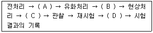
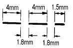

침투비파괴검사기사(구) (2004-09-05 기출문제)
1과목: 침투탐상시험원리
1. 염색침투탐상시험시 침투액을 뜨거운 시험편에 적용할 때 나타나는 현상을 바르게 설명한 것은?
- 가열된 시험편이나 차가운 시험편이나 침투제를 적용 하는데 있어서는 별차이가 없다.
- 침투제가 가열되어 침투제내의 구성요소중 일부가 빨려나와 시험편에 가연성의 잔류물질을 만들어 낸다.
- 침투제는 시편이 냉각됨에 따라 시험편 내부로 스며들어 간다.
- 시험편에 현상제를 적용한 후 관찰시 차가운 시험편에 적용될 때 보다 감도가 떨어진다.
(정답률: 알수없음)

2. 형광침투탐상시험보다 염색침투탐상시험의 장점으로 옳은 것은?
- 대형부품의 부분검사에 적합하다.
- 탐상 조작이 복잡하지 않고 검출감도가 높다.
- 소형 다량 부품의 검사에 효과적이다.
- 자외선조사등이 필요하다.
(정답률: 알수없음)
3. 침투탐상시험에서 침투액을 적용시키는 기본 원리는?
- 화학 반응
- 모세관 현상
- 표면 장력
- 컴프턴 현상
(정답률: 알수없음)
4. 다음 중 전처리에 관한 설명으로 옳은 것은?
- 결함내에 세척액을 침투시켜 결함속의 오염을 용해시키기 위해서 수 초간 방치한다.
- 검사체의 오염이 적기 때문에 침투제에서 오염을 용해시킨다.
- 에어졸 타입의 세척액의 노즐을 검사체 표면으로부터 될 수 있는 한 분리해서 넓은 범위를 일단 세척한다.
- 다음 공정의 조작을 용이하게 하기 위해서 세척액의 사용량을 될 수 있는 한 적게 한다.
(정답률: 알수없음)
5. 점성(Viscosity)이란 침투탐상검사에 지대한 영향을 미치는데, 이는 어느 경우를 설명한 것인가?
- 오염물질의 수용성 여부
- 침투제의 세척성 정도
- 발산되는 형광 성능 비교
- 침투제가 결함속으로 침투하는 속도의 관계
(정답률: 알수없음)
6. 유화제법으로 침투탐상시험시 세척이 잘 안될 때는 어떻게 하는 것이 좋은가?
- 다시 유화제를 적용하되 전보다 많은 양을 적용한다.
- 다시 유화제를 적용하되 전보다 적은 양을 적용한다.
- 첫단계부터 다시 시작하되 유화시간을 더 길게 한다.
- 첫단계부터 다시 시작하되 유화시간을 더 짧게 한다.
(정답률: 알수없음)
7. 시판되고 있는 일반적인 침투제의 비중으로 다음 중 옳은 것은?
- 0.5 이하
- 1.0 이하
- 1.5 이하
- 2.0 이하
(정답률: 알수없음)
8. 침투탐상시험에서 세라믹에서의 기공지시는 어떻게 나타나겠는가?
- 금속의 기공에 의한 지시와 근본적으로 동일하게
- 균열의 지시모양으로
- 금속의 기공에 의한 지시보다 더욱 선명하게
- 금속의 기공에 의한 지시보다 덜 선명하게
(정답률: 알수없음)
9. 액체와 표면과의 관계에서 적심성이 가장 좋은 조건은?
- 접촉각이 90° 일 때
- 접촉각이 90° 를 초과하는 조건일 때
- 접촉각과는 무관하다.
- 접촉각이 90° 미만으로 작아 질수록
(정답률: 알수없음)
10. 침투탐상시험시 A형 대비시험편을 사용하는 주목적으로 다음 중 옳은 것은?
- 침투액의 오염도 측정
- 침투액의 수분함량 시험
- 침투액의 점성 측정
- 탐상감도의 확인
(정답률: 알수없음)
11. 전처리시 용접부와 같이 부품의 일부만을 검사하는 경우 검사대상 부분에서 인접 부분을 최소한 몇 인치 범위까지 세척해야 하는가?
- 1/2 인치
- 1 인치
- 2 인치
- 3 인치
(정답률: 알수없음)
12. 다음 중 침투탐상시험법의 장점이 아닌 것은?
- 원리가 간단하고, 이해가 용이하다.
- 검사의 적용이 비교적 간단하다.
- 적용에 있어 시편 크기나 모양에 거의 무관하다.
- 모든 종류의 결함 검출이 가능하다.
(정답률: 알수없음)
13. 다음 중 침투탐상시험의 일반적 방법으로 검사할 수 없는 재질은?
- 고무
- 납
- 유리
- 알루미늄
(정답률: 알수없음)
14. 속건식 현상제를 사용하는 용제제거성 침투탐상시험을 할경우 주의 사항으로 맞는 것은?
- 현상제의 도막 두께는 표면이 완전히 하얗게 되도록 충분히 두껍게 하는 것이 좋다.
- 현상제의 에어졸 캔을 움직이면서 도포하는 것은 캔 내에 쌓여 있는 현상제를 분쇄하기 위해서이다.
- 탐상시험 결과로 결함 여부를 확인하기 위하여 재시험하는 방법은 현상제를 닦아내고 다시 현상처리를 하는 것이다.
- 현상제의 에어졸 캔을 잘 교반하여 시험면에 부풀음이 생기지 않도록 균일하게 도포한다.
(정답률: 알수없음)
15. 침투탐상시험시 용기에 담겨진 채로 사용되는 유화제의 성분으로 적합하지 않은 경우는?
- 인화점(flash point)이 낮아야 한다.
- 증발률이 낮아야 한다.
- 오염 영향이 적어야 한다.
- 독성이 없어야 한다.
(정답률: 알수없음)
16. 다음 중 양극 산화 표면을 가진 부품에도 적용할 수 있는 침투탐상시험법은?
- 수세성 염색침투탐상시험법
- 용제제거성 형광침투탐상시험법
- 수세성 형광침투탐상시험법
- 후유화성 형광침투탐상시험법
(정답률: 알수없음)
17. 침투제의 침투력을 촉진시키기 위해서 간단하게 사용하는 효율적인 방법은?
- 진동을 준다.
- 초음파 펌핑을 한다.
- 침투제 또는 검사체를 가열한다.
- 진공을 만들어 압력을 올려 준다.
(정답률: 알수없음)
18. 작고 미세한 표면 균열을 검출하는데 가장 민감한 침투탐상시험법은?
- 염색수세법
- 염색후유화법
- 형광수세법
- 형광후유화법
(정답률: 알수없음)
19. 침투탐상시험에 있어서 시험전 표면의 세척은 중요하다. 일반적으로 전처리시 표준 적용온도는 얼마로 하는 것이 좋은가?
- 4∼32℃
- 16∼52℃
- 28∼60℃
- 40∼86℃
(정답률: 알수없음)
20. 다음은 침투탐상시험에 포함되는 기본적인 절차이다. 이 때 괄호안에 알맞은 순서로 나열된 것은? (차례대로 A, B, C, D)

- 건조처리, 침투처리, 세척처리, 후처리
- 침투처리, 세척처리, 건조처리, 후처리
- 건조처리, 세척처리, 침투처리, 후처리
- 침투처리, 건조처리, 세척처리, 후처리
(정답률: 알수없음)
2과목: 침투탐상검사
21. 에어로졸(airosol) 분무통에 들어 있는 침투제 통이 추운 겨울철에 기온이 하강하여 통내의 가스(gas)압이 내려가 분무상태가 곤란한 경우, 다음의 기술된 내용 중 어떻게 조치함이 가장 적당한가?
- 통을 난로옆에 놓아 온도를 상온으로 올려 사용한다.
- 60℃의 항온실 중에 놓아 온도를 올려 사용한다.
- 35℃ 미만의 온수에 넣어 온도를 상승시켜 사용한다.
- 얼은 통은 온도를 상승시켜도 제기능을 발휘 못하기 때문에 폐기한다.
(정답률: 알수없음)
22. 침투탐상시험 중 VC-S는 많이 사용하나 VC-D는 거의 사용하지 않는 가장 큰 이유는?
- 조작이 복잡하다.
- 침투액 흡수가 나쁘다.
- 분말 비산이 심하다.
- 대조가 용이하지 않다.
(정답률: 알수없음)
23. 얇은 쪽과 두꺼운 쪽의 냉각 차이에 의해서 주조품에 나타날 수 있으며 매우 다양한 폭과 여러 개의 가지가 달린 구불구불한 선 형태의 지시는?
- 랩(Lap)
- 수축공(Shrinkage cavity)
- 핫티어(Hot Tear)
- 콜드셧(Cold Shut)
(정답률: 알수없음)
24. 침투탐상용 A형 대비시험편의 특징중 장점에 속하지 않는 것은?
- 시험편의 제작이 간단하다.
- 균열의 재현성이 뛰어나므로, 많이 재사용하여도 검출감도에는 변화가 없다.
- 시험편의 균열의 형상이 자연균열에 가깝고, 또 재질적으로도 경금속 재료에 사용하는 탐상제의 성능을 점검하는 대비시험편으로 적합하다.
- 비교적 미세한 균열을 얻을 수 있고, 시험편에는 다양한 깊이, 폭의 균열이 발생하기 때문에 균열의 폭, 깊이에 의한 성능의 차를 아는 것이 가능하다.
(정답률: 알수없음)
25. 침투탐상시험을 실시한 표준시험편(알루미늄 합금)을 사용후 철저히 후처리해야 하는 이유는?
- 침투제에 함유되어 있는 산 성분이 부식을 초래하기때문
- 습식현상제의 알카리 성분 및 유화제가 표면에서 점식형의 결함을 유발하기 때문
- 침투제와 알루미늄 사이에서 화학적 반응이 생겨 자연 산화를 일으킬 위험성이 생기기 때문
- 표면에 남아 있는 잔류물이 알루미늄 합금의 표면에 페인트 처리를 방해하기 때문
(정답률: 알수없음)
26. 다음 중 결함 검출감도가 산에 대한 영향이 적고 야외 검사에 편리한 특성을 지닌 침투탐상시험법은?
- 수세성 형광침투탐상시험법
- 후유화성 형광침투탐상시험법
- 후유화성 염색침투탐상시험법
- 용제제거성 염색침투탐상시험법
(정답률: 알수없음)
27. 초음파 세척방법은 물과 비누 또는 솔벤트가 용제로 사용된다. 다음 중 어느 것을 세척하는데 가장 효과적인가?
- 큰 부품의 표면세척
- 압력용기의 내면세척
- 작은 부품의 다량 세척
- 20m 길이의 용접부위 세척
(정답률: 알수없음)
28. 다음 중 어떤 결함들이 침투탐상시험시 한 계열의 연결형 점으로 그 지시모양이 나타나게 되는가?
- 흩어진 기공
- 열린 심
- 넓거나 큰 터짐
- 가느다란 터짐
(정답률: 알수없음)
29. 침투탐상시험시 사용되는 건조장치로 가장 효과적인 것은?
- 적외선식 건조기
- 전열식 건조기
- 백열등식 건조기
- 열풍식 건조기
(정답률: 알수없음)
30. 침투제의 형광성능을 평가할 경우 통상적으로 나타나는 결과치는 무엇을 의미하는가?
- 지시에서 발산되는 실제 빛의 양
- 재료를 형광화 하는데 소요되는 자외선의 양
- 다른 침투제와 비교할 때 형광물질에서 발산되는 빛의 상대량
- 주위에서 발산되는 빛과 비교할 때 형광 물질에서 발산되는 빛의 상대량
(정답률: 알수없음)
31. 다음은 침투탐상검사의 각 공정을 설명한 것이다. 잘못된것은?
- 검사품의 표면온도는 16-52℃가 적당하다.
- 침투시간은 예상결함, 침투액의 종류 등에 따라 5~20분 정도가 적당하다.
- 현상시간은 길게 할수록 검출감도가 좋다.
- 자외선등의 최소 강도는 800μW/㎝2정도이다.
(정답률: 알수없음)
32. 침투탐상시험에서 침투용액의 감도를 측정하는 기기는?
- 비중계
- 광학렌즈
- 현미경
- 메니스커스 렌즈
(정답률: 알수없음)
33. 다음 중 침투탐상제를 취급할 때의 안전조치 사항이 아닌것은?
- 침투탐상제가 피부나 의복에 접촉되지 않도록 한다.
- 증기나 분말을 들이마시지 않도록 한다.
- 불꽃을 튀기는 장비나 화기 근처에서는 절대 탐상을 금한다.
- 침투탐상제가 자외선등에 노출되지 않도록 한다.
(정답률: 알수없음)
34. 형광침투액에 자외선등의 빛이 닿아서 발생하는 가시광선의 파장은 대략 몇 Å인가?
- 1250
- 1800
- 2650
- 5500
(정답률: 알수없음)
35. 침투탐상검사시 부품은 세척한 후 열풍이 순환되는 건조실에서 건조시킨다. 건조실 온도는 몇 도 이상 초과해서는 안되는가?
- 15℃
- 30℃
- 52℃
- 90℃
(정답률: 알수없음)
36. 염색침투탐상시 검출되는 지시는 보통 어떻게 나타나는가?
- 회색의 바탕색에 대해 강한 빨간색의 빛으로 나타난다.
- 회색의 바탕색에 대해 빨간색으로 나타난다.
- 하얀색의 바탕색에 대해 빨간색으로 나타난다.
- 강한 하얀색의 바탕색에 대해 청록색으로 나타난다.
(정답률: 알수없음)
37. 다음 중 의사지시의 발생원인이 아닌 것은?
- 부주의한 세척
- 검사대위에 떨어져 있는 침투제
- 억지 끼워 맞춤에 의한 틈새
- 현상제에 침투제가 오염되어 있는 경우
(정답률: 알수없음)
38. 제거될 오염이 무기물이면 세제나 물과 함께 사용하고, 유기물이면 유기용제와 함께 사용하는 세척방법으로, 세척액을 제거하기 위해 가열한다. 이렇게 세척효율은 증가시키고 세척시간을 줄이는데 효과적인 세척방법은?
- 초음파세척
- 산에칭
- 알카리세척
- 증기탈지
(정답률: 알수없음)
39. 염색 침투탐상검사시 시험면의 조도는?
- 100Lx 이상
- 150Lx 이상
- 500Lx 이상
- 20Lx 이하
(정답률: 알수없음)
40. 침투탐상검사시 사용되는 현상법을 분류한 것이다. 잘못된 것은?
- 습식현상법
- 무현상법
- 건식현상법
- 반건식현상법
(정답률: 알수없음)
3과목: 침투탐상관련규격
41. ASME Sec.Ⅴ Art.24 SE-165 침투탐상시험의 관찰에 대한 설명이다. 틀린 것은?
- 형광침투액 사용시 관찰표면의 밝기는 20lx이상이다.
- 자외선조사등의 예열은 최소 10분이상이다.
- 자외선조사등의 강도는 검사표면에서 1000㎼/㎝2이상이다.
- 비형광침투액 사용시 자연광 또는 인공백색광하에서 검사 할 수 있다.
(정답률: 알수없음)
42. KS B 0816에 따른 침투시험에서 전수 검사의 경우 합격한 시험체에 대한 표시방법이 아닌 것은?
- 황색으로 시험체에 P의 기호를 표시한다.
- 각인으로 시험체에 P의 기호를 표시한다.
- 부식으로 시험체에 P의 기호를 표시한다.
- 적갈색으로 착색하여 표시한다.
(정답률: 알수없음)
43. KS B 0816에 규정된 일반적인 시험을 위한 조작 순서로 맞는 것은? (단, 준비 및 전처리, 후처리 및 방청 조치는 생략한다.)
- 침투액의 적용 → 현상제의 적용 → 잉여침투액의 제거 → 관찰 → 기록
- 현상제의 적용 → 잉여침투액의 제거 → 침투액의 적용 → 관찰 → 기록
- 잉여침투액의 제거 → 침투액의 적용 → 현상제의 적용 → 기록 → 관찰
- 침투액의 적용 → 잉여침투액의 제거 → 현상제의 적용 → 관찰 → 기록
(정답률: 알수없음)
44. KS B 0816에 의한 침투탐상시험을 할 때 현상제의 종류, 예측되는 결함의 종류와 크기 및 시험품의 온도를 고려하여 현상시간을 정하는데 일반적인 현상시간은?
- 10 ~ 30분
- 1 ~ 5분
- 30초 ~ 1분
- 5초 ~ 30초
(정답률: 알수없음)
45. ASME Sec.Ⅷ에 따른 침투탐상시험에 의한 결함길이가 몇 인치이상일 때 평가 대상이 되는가?
- 3/32
- 3/16
- 1/16
- 1/8
(정답률: 알수없음)
46. 인터넷의 도메인 네임(Domain Name)분류 중 기관 표기로 "or"에 해당하는 미국의 도메인 네임 분류로 맞는 것은?
- com
- net
- org
- gov
(정답률: 알수없음)
47. MIL I 6866B(ASG)에서 규정한 침투탐상 시험방법으로 분류된 가지수는?
- 3개
- 4개
- 5개
- 6개
(정답률: 알수없음)
48. 자료 전송방식의 하나로서 한 글자를 이루는 각 비트들이 하나의 전송선을 통하여 한 비트씩 순서적으로 전송되는 방식은?
- 아날로그 전송
- 디지털 전송
- 직렬 전송
- 병렬 전송
(정답률: 알수없음)
49. 침투탐상시험에 대한 국내 규격은 KS B 0816이다. 다음중 이 규격의 인용과 관련이 있는 것은?
- KS B 0817
- KS B ⑤50
- KS D 0252
- KS D 0213
(정답률: 알수없음)
50. 다음은 통신 프로토콜에 대한 설명이다. 가장 적절하지 않은 것은?
- 통신 프로토콜은 반드시 표준을 따라야 한다.
- 컴퓨터 시스템 사이의 통신 규약이다.
- 동일한 프로토콜을 사용하여야 통신이 가능하다.
- TCP/IP도 프로토콜의 한 예이다.
(정답률: 알수없음)
51. KS B 0816에 의한 침투탐상시험시 속건식 현상제를 사용하는 경우 적용 방법과 건조 방법으로 알맞는 것은?
- 침지법, 자연 건조
- 유동상법, 가열 건조
- 스프레이법, 고온에서의 건조
- 분말도포 노즐법, 실온 건조
(정답률: 알수없음)
52. KS B 0816에 의한 침투액 적용방법이 아닌 것은?
- 전침지법
- 스프레이법
- 흩날림법
- 솔로 칠하는 방법
(정답률: 알수없음)
53. KS W 0914 규정에 의한 최대 현상시간을 적용현상제에 따라 기술하였다. 다음 중 틀린 것은?
- 무현상제법 - 2시간
- 건식현상제 - 4시간
- 비수성현상제 -1시간
- 수성현상제 - 3시간
(정답률: 알수없음)
54. ASME Sec.Ⅲ Div.1 침투탐상시험의 판정기준에 대한 설명이다. 틀린 것은?
- 가장 큰 치수가 1/16inch 보다 큰 지시는 관련지시로 간주한다.
- 균열로 예상되는 선형관련지시는 길이에 관계없이 불합격이다.
- 균열이 아닌 선형관련지시는 3/16inch이상인 경우 불합격이다.
- 원형관련지시는 3/16inch 이상인 경우 불합격이다.
(정답률: 알수없음)
55. KS B 0816에 따른 형광침투탐상시험의 관찰조건을 설명한 것으로 틀린 설명은?
- 광가역 변색을 일으키는 안경을 착용해서는 안 된다.
- 검사실은 시험원이 관찰하는 모든 면에서 형광을 발해서는 안 된다.
- 관찰할 때의 검사 부스의 밝기는 500lx이하로 한다.
- 필요시 시험원이 검사실안을 자유로이 이동할 수 있도록 블랙라이트에 의한 배경 조명을 설치할 수 있다.
(정답률: 알수없음)
56. KS B 0816에 의한 침투탐상시험시 유화제에 대한 설명으로 올바른 것은?
- 물기제 유화제 사용시 탐상제 제조자의 사용설명서에 따라 예비시험없이 바로 적용하고 유화시간을 결정하면 된다.
- 물기제 유화제 사용시 침지법 또는 기포발생장치를 사용하여 적용하여야 한다.
- 기름기제 유화제 사용시 주입법 또는 기포발생장치를 사용하여 적용하여야 한다.
- 기름기제 유화제 사용시 유화시간은 다음의 세정공정에서 시험면의 잉여 침투액을 충분히 제거할 수 있는 시간까지를 적용하여야 한다.
(정답률: 알수없음)
57. KS B 0816에 의한 시험결과 3개의 선상 침투지시 모양이 동일 선상에 연속해서 존재하고 있다. 2개의 지시모양의 길이가 각각 4mm이고, 1개는 1.5mm 이하로 측정되었을 때 흠 상호간의 거리가 모두 1.8mm이었다면 다음 중 맞는 것은?

- 3개의 독립된 결함으로 간주한다.
- 연속된 1개의 결함으로 간주한다.
- 2개의 독립된 결함으로 간주한다.
- 원형상 결함지시로 간주한다.
(정답률: 알수없음)
58. Windows98의 디스플레이 등록정보에서 할 수 있는 기능들 중 틀린 것은?
- 배경화면을 내가 좋아하는 사진이나 배경으로 바꿀 수 있다.
- HTML문서는 배경 화면으로 지정할 수 없다.
- 일정시간이 경과하여도 컴퓨터를 사용하지 않으면 화면 보호기를 사용하여 화면을 보호할 수 있도록 할 수 있다.
- 화면 배색을 조정할 수 있다.
(정답률: 알수없음)
59. 시스템의 날짜, 시간, HDD 타입 등의 정보를 기억하고 있는 것은 무엇인가?
- RAM
- ROM
- BIOS
- CMOS
(정답률: 알수없음)
60. MIL I 25135에서 단조 겹침상태를 검사하는데 적합한 침투탐상시험 방법은?
- 그룹 Ⅳ : 수세성 침투제, 건식 현상제
- 그룹 Ⅴ : 후유화성 침투제, 습식 현상제
- 그룹 Ⅴ : 후유화성 침투제, 속건식 현상제
- 그룹 Ⅵ : 후유화성 침투제, 속건식 현상제
(정답률: 알수없음)
4과목: 금속재료학
61. 고체 침탄법에서 침탄제로써 가장 우수한 것은?
- 목탄 및 코크스
- NaCN과 KCN
- NaCl2 및 CaCO3의 혼합물
- 목탄 60%와 BaCO3의 혼합물
(정답률: 알수없음)
62. 합금의 미세화 처리를 목적으로 용융금속에 금속 나트륨을 첨가한 것은?
- Cu - Zn 계
- Zn - Al - Cu 계
- Al - Si 계
- Cu - Ni 계
(정답률: 알수없음)
63. 쾌삭강(free cutting steel)은 어느 성분을 더 함유시킨 것인가?
- C
- Si
- Mn
- S
(정답률: 알수없음)
64. 구상흑연 주철의 첨가제, Zr, U, Ti의 환원용, 전기 방식용 양극으로 사용되는 비철 금속은?
- Zn
- Mg
- Al
- Sn
(정답률: 알수없음)
65. 스테인리스강의 주요 성분으로 맞는 것은?
- P-Mn
- S-Se
- Si-Pb
- Ni-Cr
(정답률: 알수없음)
66. 열전대 중 가장 높은 온도를 측정할 수 있는 것은?
- 백금-백금 로듐
- 철-콘스탄탄
- 크로멜-알루멜
- 구리-콘스탄탄
(정답률: 알수없음)
67. Ni 합금에서 염산에 대한 내식성의 향상을 위하여 첨가하는 원소로 가장 좋은 금속은?
- Al
- Pb
- Mo
- Si
(정답률: 알수없음)
68. 동합금중에서 가장 높은 강도와 경도를 얻을수 있는 석출 경화성 합금은?
- Cu - Be 합금
- Cu - Sn 합금
- Cu - Zn 합금
- Cu - Cr 합금
(정답률: 알수없음)
69. 냉각속도가 600℃/sec 에 도달하면 Ar’ 변태는 완전히 없어지고 Ar“ 변태만이 일어나 완전 마텐자이트의 조직으로 되는 것은?
- 분열변태냉각속도
- 항온변태속도
- 상부임계냉각속도
- 하부변태속도
(정답률: 알수없음)
70. 공정형 상태도를 나타내는 가장 대표적인 합금은?
- Cu - Ni
- Cu - Al
- Al - Si
- Ni - Fe
(정답률: 알수없음)
71. 응고 온도 범위가 넓고 역편석(inverse segregation)이 나타나는 것은?
- 알루미늄 청동
- 주석 청동
- 알루미늄 황동
- 함규소 황동
(정답률: 알수없음)
72. 항복점이 크고 내마모성이 양호한 레일과 차륜을 만들려고 할 때 어느 재료를 선택하는 것이 가장 좋겠는가?
- 0.1% 탄소강
- 0.7% 탄소강
- 1.2% 탄소강
- 2.0% 탄소강
(정답률: 알수없음)
73. 침상 주철(acicular cast iron)의 바탕의 주 조직은?
- 베이나이트
- 미세한 펄라이트
- 마텐자이트
- 오스테나이트
(정답률: 알수없음)
74. 강을 침탄한 후 1, 2차 담금질을 하는 목적은?
- 1차는 중심부 미세화, 2차는 표면을 경화 시킨다.
- 1차는 중심부 조대화, 2차는 표면을 미세화 시킨다.
- 1차는 중심부 미세화, 2차는 표면을 연화 시킨다.
- 1차는 중심부 조대화, 2차는 응력을 제거시켜 준다.
(정답률: 알수없음)
75. 탄소강판이나 기계가공부에 존재하는 결함의 검출에 적합한 비파괴 시험은?
- 슴프 측정법
- 자분 탐상법
- 스프링 시험법
- 크리프 시험법
(정답률: 알수없음)
76. Cr-Mo강에 대한 설명이 틀린 것은?
- Cr강에 소량의 Mo을 첨가하면 펄라이트강이 된다.
- Cr-Mo강에는 C가 대략 0.27-0.48[%] 정도이다.
- Cr-Mo강의 기계적 성질은 Ni-Cr강과 비슷하여 용접도 용이하다.
- Cr-Mo강은 Mo가 들어있어 뜨임취성이 크다.
(정답률: 알수없음)
77. 강에서 발생하는 백점(flake)의 주 원인은?
- 산소
- 수소
- 질소
- 황
(정답률: 알수없음)
78. Al - Cu - Mg 합금에 있어서의 S′ 중간상의 형상을 옳게 나타낸 것은?
- 만곡(bend)상이다.
- 구(sphere)상이다.
- 라스(lath)상이다.
- 실린더(cylinder)상이다.
(정답률: 알수없음)
79. 금속의 용해에 Si 등의 산성 산화물이 생기는 경우 사용해서는 안되는 내화물은?
- Al2O3
- SiO2
- CaO
- Cr2O3
(정답률: 알수없음)
80. Cu의 결정 구조는 FCC이다. lattice parameter가 3.61Å 일 때 Cu의 밀도는? (단, Cu의 원자량은 63.54 gr이고, Avogadro 수는 6.023 × 1023 molecule/mole이다)
- 약 9.95 g/cm3
- 약 8.95 g/cm3
- 약 6.48 g/cm3
- 약 4.48 g/cm3
(정답률: 알수없음)
5과목: 용접일반
81. 1차 입력전원이 24.2[KVA]인 피복 아크용접기를 1차 전원 전압 220[V]에 접속하고자 할 경우 퓨즈(fuse) 용량으로 가장 적합한 것은?
- 220[A]
- 200[A]
- 110[A]
- 100[A]
(정답률: 알수없음)
82. 피복 금속아크 용접시 모재측의 발열량의 크기를 순서대로 표시한 것으로 옳은 것은?
- 직류 역극성 ＞ 교류 ＞ 직류 정극성
- 교류 ＞ 직류 역극성 ＞ 직류 정극성
- 교류 ＞ 직류 정극성 ＞ 직류 역극성
- 직류 정극성 ＞ 교류 ＞ 직류 역극성
(정답률: 알수없음)
83. 용적이 40리터인 산소 용기의 고압계가 90㎏f/㎝2 으로 나타났다면 시간당 300리터의 산소를 소비하는 팁으로는 이론적으로 몇 시간 용접할 수 있는가? (단, 산소와 아세틸렌의 혼합비는 1 : 1 이다)
- 6시간
- 9시간
- 12시간
- 15시간
(정답률: 알수없음)
84. 다음 중 예열불꽃이 강할 때 절단에 미치는 영향으로 올바른 것은?
- 절단속도가 늦어진다.
- 드래그가 증가한다.
- 역화를 일으키기 쉽다.
- 절단면이 거칠어진다.
(정답률: 알수없음)
85. 주철의 아크 용접시 균열 방지방법이 아닌 것은?
- 예열과 후열을 한다.
- 열영향부를 백선화시킨다.
- 용접 후 열간 피닝을 한다.
- 순 니켈 용접봉을 사용한다.
(정답률: 알수없음)
86. 다음 중 겹쳐놓은 두개의 용접재 한쪽에 둥근 구멍 대신에 좁고 긴 홈을 만들어 놓고 그 곳을 용접하는 이음의 형태는?
- 슬롯 용접(Slot weld)
- 비드 용접(Bead weld)
- 플러그 용접(Plug weld)
- 플레어 용접(Flare weld)
(정답률: 알수없음)
87. 가동 철심형 아크 용접기의 특성 설명으로 틀린 것은?
- 광범위한 전류 조정이 어렵다.
- 미세한 전류 조정이 불가능하다.
- 누설자속의 가감으로 전류를 조정한다.
- 누설자속의 영향으로 아크가 불안정하게 되기 쉽다.
(정답률: 알수없음)
88. 용접전류 300A, 아크전압 35V, 아크길이 3mm, 용접속도 20cm/분의 용접 조건으로 피복 아크용접을 실시할 경우 아크가 단위길이 1cm당 발생하는 전기적 에너지는?
- 7560 joule/cm
- 9450 joule/cm
- 15750 joule/cm
- 31500 joule/cm
(정답률: 알수없음)
89. 연납땜과 경납땜은 땜납의 융점 온도 몇 ℃를 기준으로 하는가?
- 250
- 350
- 450
- 550
(정답률: 알수없음)
90. 불활성가스 텅스텐 아크용접(TIG용접)에서 아크쏠림(Arc Blow 또는 Magnetic Blow) 현상이 일어나는 원인이 아닌것은?
- 자장 효과(magnetic effects)
- 용접 전류 조정이 너무 낮게 되었을 때
- 텅스텐 전극봉이 탄소에 의해 오염 되었을 때
- 풋 컨트롤(foot control)장치로 전류를 감소시킬 때
(정답률: 알수없음)
91. 다음 용접의 종류 중 비가열식 압접인 것은?
- 폭발 용접
- 업셋 용접
- 시임 용접
- 마찰 용접
(정답률: 알수없음)
92. 정격 2차전류가 200A, 정격 사용율이 30%인 용접기로 180A로 용접할 경우 허용 사용율은 약 몇 % 인가?
- 33
- 37
- 53
- 67
(정답률: 알수없음)
93. 피복아크 용접회로에서 전류가 용접전원에서 흐르기 시작하여 용접전원으로 되돌아오는 순서로 가장 적합한 것은?
- 전원 → 용접봉홀더 → 아크 → 용접봉 → 모재 → 전원
- 전원 → 용접봉홀더 → 용접봉 → 아크 → 모재 → 전원
- 전원 → 아크 → 용접봉 → 모재 → 용접봉홀더 → 전원
- 전원 → 용접봉 → 용접봉홀더 → 아크 → 모재 → 전원
(정답률: 알수없음)
94. 일반적인 용접작업의 순서를 나열한 것으로 다음 중 가장 적합한 것은?
- 용접부 청소 → 절단 및 가공 → 가접 → 검사 및 판정 → 본용접
- 절단 및 가공 → 용접부 청소 → 본용접 → 가접 → 검사 및 판정
- 가접 → 용접부 청소 → 절단 및 가공 → 본용접 → 검사 및 판정
- 절단 및 가공 → 용접부 청소 → 가접 → 본용접 → 검사 및 판정
(정답률: 알수없음)
95. 고속 회전운동을 하는 한쪽 재료에 다른 한쪽을 접촉시키고 축방향으로 힘을 가하여 생성되는 열을 이용하여 용접하는 것은?
- 마찰 용접
- 저주파 용접
- 폭발 용접
- 고주파 용접
(정답률: 알수없음)
96. 다음의 연강 용접이음 중 이음의 정적강도가 가장 작은 이음의 종류는?
- 양쪽 덥개판 전면 필릿용접
- 양쪽 덥개판 측면 필릿용접
- 원형 플러그 용접
- 맞대기 홈용접
(정답률: 알수없음)
97. 비드밑 균열의 비파괴 검사방법으로 가장 적합한 것은?
- 외관 검사
- 초음파 투과시험
- 자분 탐상시험
- 방사선 탐상시험
(정답률: 알수없음)
98. 용접부의 기공 발생에 대한 원인으로 가장 관계가 적은 것은?
- 용접부의 급속한 응고
- 용접봉과 이음부의 습기
- 용접 이음 설계의 부적당
- 모재 중 황(S)의 함량이 클 경우
(정답률: 알수없음)
99. 저수소계 피복아크 용접봉의 건조온도 및 건조시간으로 다음 중 가장 적합한 것은?
- 150~200℃, 2시간
- 300~350℃, 1 ~ 2시간
- 200~300℃, 3시간
- 100~150℃, 3 ~ 4시간
(정답률: 알수없음)
100. AW-300 무부하 전압 80V, 아크 전압 30V인 교류아크 용접기를 사용할 경우 용접기의 역률 및 효율은 몇 % 인가? (단, 용접기의 내부 손실은 5kW 이다.)
- 역률 58.3, 효율 64.3
- 역률 62.5, 효율 58.3
- 역률 64.3, 효율 58.3
- 역률 58.3, 효율 62.5
(정답률: 알수없음)